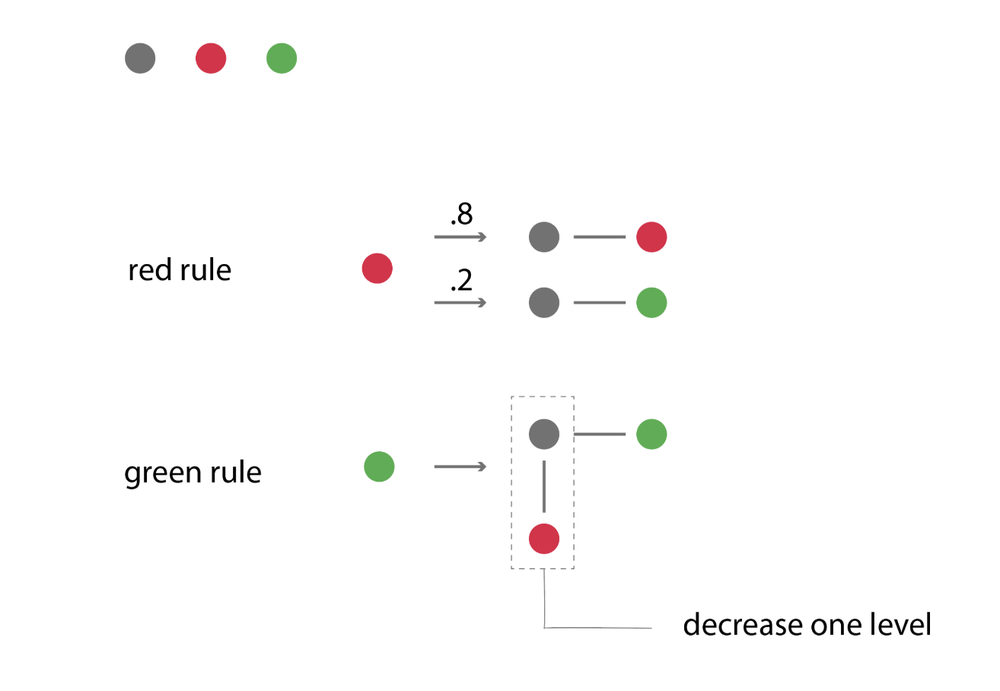

Ever since I laid my eyes on Sean C. Jackson's intricate maze drawings, I've been utterly captivatedüòç. His meticulous designs and the winding paths drew me into a world of endless exploration, and I want to bring them to life in a more dimensional space.
I have created mazes before in introductory CS classes using Binary Tree, Dijkstra, Prism and etc... However these are all 2D flat mazes that are not as interesting as the ones I saw on Sean's website! I want to create a maze that is more complex and more interesting to look at. Here are some different types of mazes I created for my 'Tap Jump' game for 15-112 final project. I remember delving into the book "Mazes for Programmers" that summer, a gem for anyone enthralled by the logic behind maze creation.
To create mazes in the style of Sean C Jackson's, I decided to read the book again for inspiration. And I realized that although the book tantalizingly delved into the concept of 3D mazes, their representation remained flat and 2D. This realization birthed my mission: to breathe 3D life into these algorithms.Starting from a mere single node, I created a set of green and red rules to mold and expand my structure. The starting node will be either a red node or a green node, and follow the rules to expand out. To add in the "level changes" that mimics Sean C Jackson's designs, I decided to implement a level change whenver there is a grey-red edge. With every descending level, I reduced the height by a single unit, paving the way for a multi-layered 2.5D architectural wonder.
Applying these rules, the nodes will expand to different configurations. And the next step is to turn them in to 3D.
To do this, I decided represent each node as a block, and the edges represent the direction to put the next block. And a grey-red edge represents a level change. Hence, the maze will start building from the highest block, and gradually go down from the center. Merging levels seamlessly was no small feat. A maze spread across dimensions required transitions - stairs. To adeptly place these stairs, connecting the maze's multiple layers, I turned to the Randomized Prim's Algorithm. This would add stairs to ensure there's at least one path from source to destination, and also add in random stairs on other routes. Beyond mere placement, this algorithm was instrumental in guaranteeing a clear, uninterrupted route from inception to conclusion.
It's already starting to have the vibe of Sean C Jackson's mazes!
The algo can generate mazes on different scales. I rendered the images in this white monotone color for now because they really bring out the rhythm of the maze. I will add in colors and handdrawing-textures in the future when I have more time to work on this project (hopefully)ü§êÔ∏è
Iteration = 10
Iteration = 20
Iteration = 40
generating different obstacles and starting and ending points on the same topography